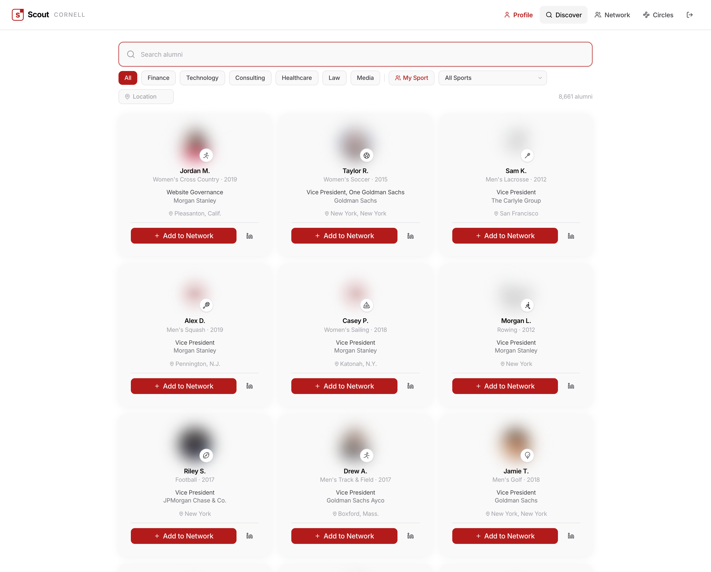

Click any card to open the full mockup in your browser. Everything is in the locked look (Direction A), uses your real logo, and the writing runs through the anti-AI voice rules. Two things still need you: three real story bits, and the alumni-number reconciliation.
Proven: I can log into your live site, capture any screen, and anonymize it. Below is your real Discover page — faces blurred, names swapped to fakes, firms and sports kept.

scout-shots/ also holds the raw captures (network, circles, profile) — empty on this account, so pipeline + circles get faithful recreations.
Strategy & skill
Positioning & cadence
Core line: "Scout tells you what season you're in."
Three clocks: Early Pipeline · Structured Fall · Just-in-Time